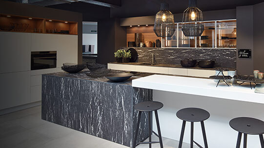
Moderne keukens
vanaf € 17.500
Greeploos, glanzend of mat, met verfijnde inbouwapparatuur en slimme kastindelingen.
Keukenarchitectuur in Arnhem, Nijmegen en Ede
Wij ontwerpen maatwerkkeukens en renoveren bestaande keukens. Het eerste gesprek is bij u thuis. Daarna regelen wij alles, tot de kookklare oplevering.
4,8 uit 29 Google-reviews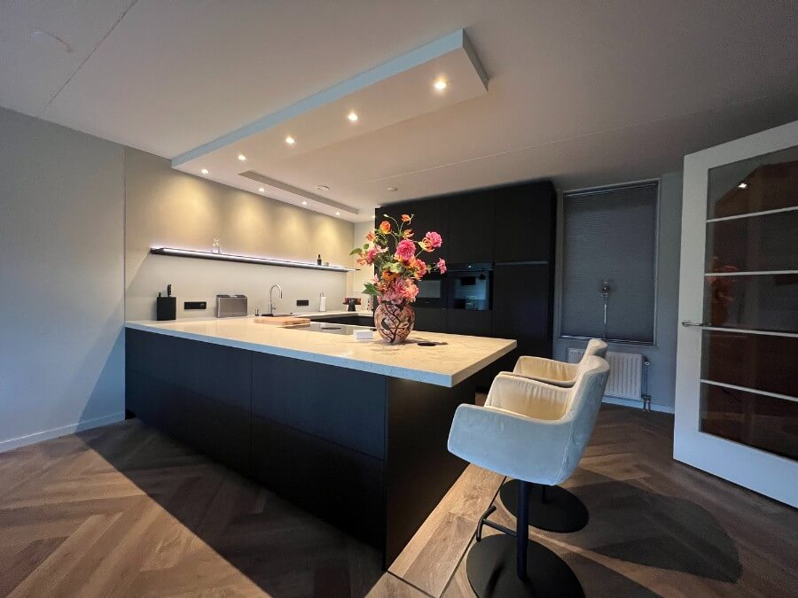
Met onzinnige en misleidende acties verleiden wij geen klanten. Wij verleiden u liever met een mooi ontwerp en een keuken waar goed over is nagedacht, tegen een eerlijke prijs.
Omdat wij écht maatwerk leveren, kunnen we bijna iedere kast in hoogte, breedte en diepte op maat laten maken. Zo ontwerpen we de keuken die past bij uw ruimte, en bij u.
All Style Keukens is een compact keukenbedrijf met een klein team vakmensen. Met 30 jaar kennis en ervaring vertalen we uw wensen naar een doordacht keukenplan. Ons montageteam doet desgewenst alles: sloop en afvoer van de oude keuken, het aanpassen van leidingwerk en de montage tot en met de kookklare oplevering.
“Als keukenontwerper vertaal ik de wensen van de klant naar een prachtig keukenplan met een doordacht ontwerp. Kwaliteit én het beste advies zijn steeds onze uitgangspunten, vanaf het ontwerp tot de realisatie.”
Strak en greeploos of sfeervol in echt hout: in onze keukenstudio ziet u de combinaties van materiaal, kleur en uitvoering met eigen ogen. Onze prijzen noemen we gewoon vooraf.

vanaf € 17.500
Greeploos, glanzend of mat, met verfijnde inbouwapparatuur en slimme kastindelingen.
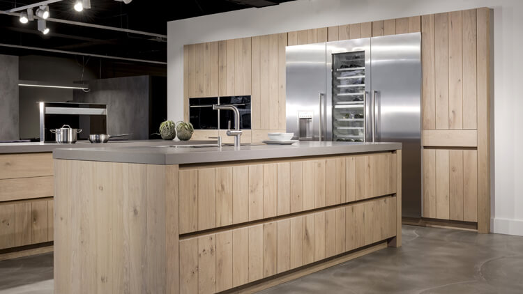
vanaf € 25.000
Warm, stevig en voor jaren. Echt hout in de uitvoering die bij uw huis past.
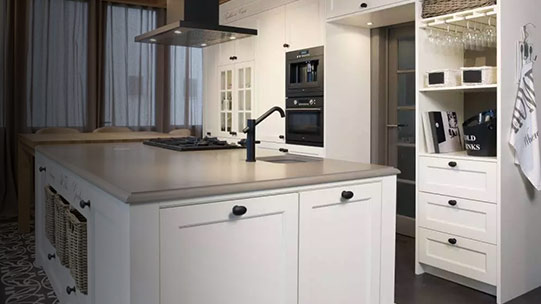
vanaf € 25.000
Paneelfronten, knoppen en een sfeer die past bij een karakteristieke woning.
Is uw keuken nog goed, maar oogt hij moe? Dan hoeft u niet alles te vervangen.
vanaf € 5000
Vraag een renovatie aanWij werken altijd op afspraak, zodat we alle tijd voor u hebben. U heeft één aanspreekpunt voor het hele traject.
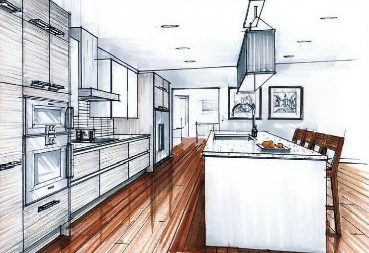
De eerste afspraak is bij u thuis. We meten de ruimte op, bespreken uw wensen en de beste opstelling.
Wij maken een compleet en passend keukenontwerp, inclusief apparatuur, werkblad, spoelbak, kraan en verlichting.
U kiest uitvoering, kleuren, materialen en techniek. Daarna krijgt u een totaalbegroting, die we uitgebreid met u doornemen.
Na uw opdracht maken wij een fotorealistische 3D-weergave en een 360-view. U ontvangt een orderbevestiging met alle afspraken.
Ervaren monteurs plaatsen uw keuken. We begeleiden alles van A tot Z en sluiten af met een uitgebreide oplevering, met uitleg en advies.
Een paar keukens die we hebben ontworpen en geplaatst.
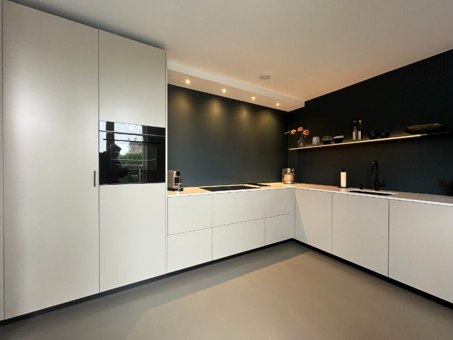
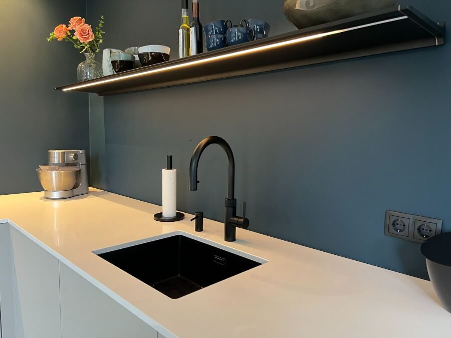
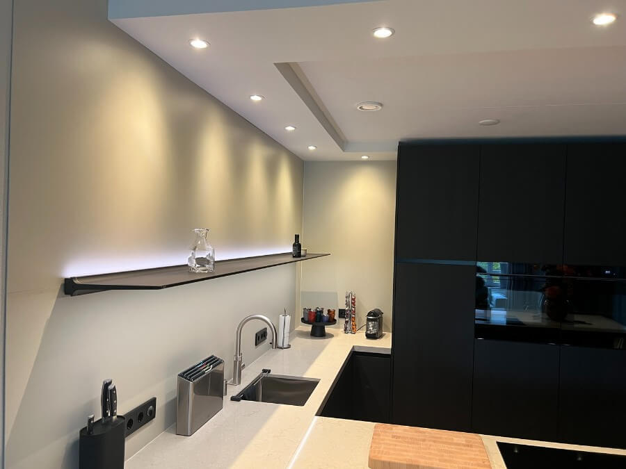
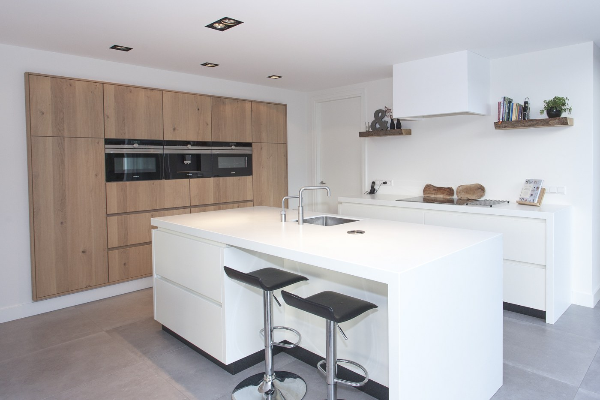
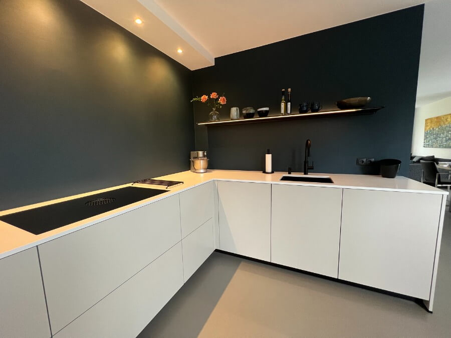
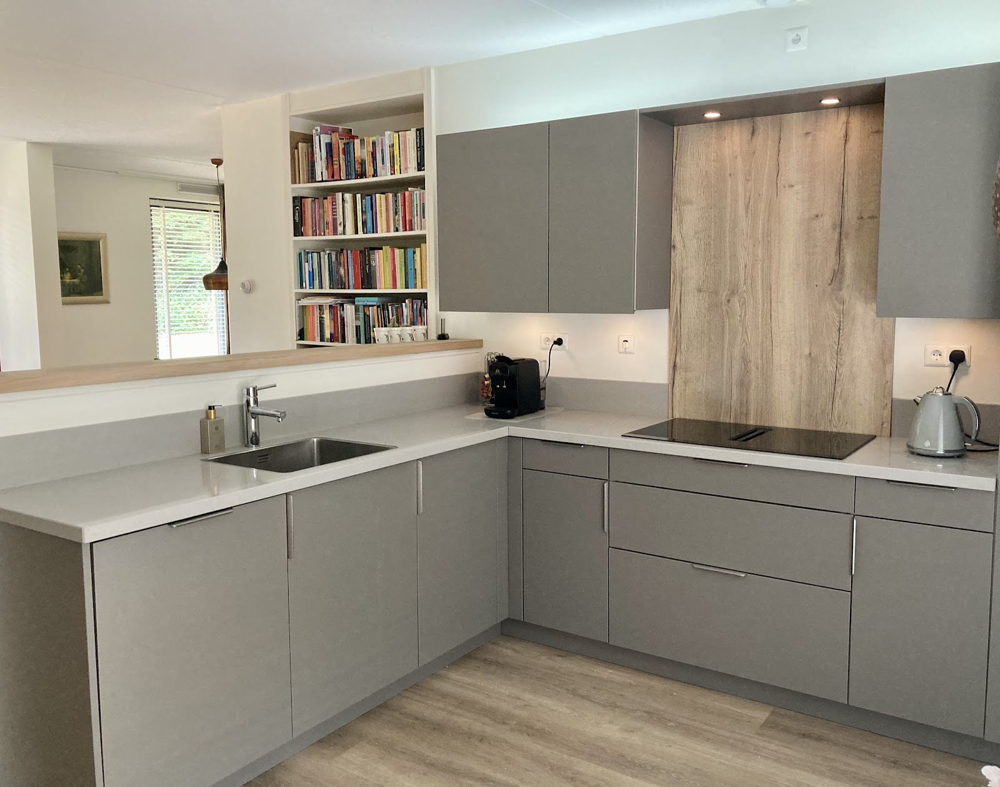
uit 29 reviews op Google
“Geen keuken uit de printer, maar een keuken met aandacht”
“Keukenshoppen, we kennen het allemaal. Je loopt een rondje door een showroom, schuift aan bij een verkoper achter een computer, er wordt wat geklikt en ta-da: er rolt een keuken uit. Daar krijg je dan gratis een takenlijst bij. Oude keuken zelf slopen, zelf afvo…”
“Joost en jouw team super bedankt! Onze keuken is een prachtig plaatje geworden. We hebben de tips en adviezen als zeer nuttig ervaren en alles is tot in de puntjes verzorgd. We zijn dan ook erg tevreden met het fraaie resultaat en de goede service en begeleiding in het hele traject, van demontage tot volledige afwerkin…”
“De afgelopen 15 jaar zijn we een aantal keren verhuisd en daar steeds een nieuwe keuken naar onze eigen smaak gekozen. Elke huis was anders en elke keuken daarom ook. Wat wel elke keer hetzelfde was, dat de keukens steeds door All style Keukens zijn geleverd en dus meer dan naar volle tevredenheid. Kwaliteit, informa…”
“Vanochtend is mijn keukenrenovatie afgerond. Ben helemaal tevreden en blij ermee. Na ons bezoek in de toonzaal bij All style keukens waren we geïnspireerd en enthousiast geworden. Meedenken over mogelijkheden. Het werd een renovatie met wel een nieuwe inductieplaat met afzuiging (Siemens) en een nieuwe stoom-oven-manet…”
Gedreven keukenontwerper!“Voor onze woning in Huissen waren we op zoek naar een keukenspecialist die de beperkte ruimte zo effectief mogelijk kon benutten en die alles van begin tot eind zou regelen. Zo kwamen we terecht op de website van All Style Keukens. De daar uitvoerig beschreven werkwijze sprak ons direct aan…”
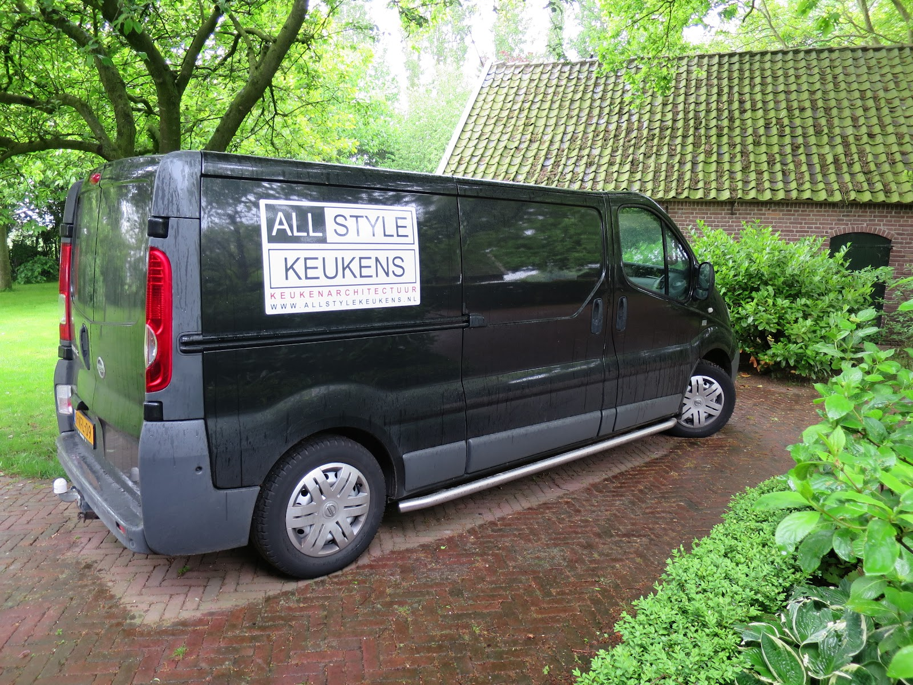
Ons werkgebied ligt op ongeveer 20 km rond Arnhem, Nijmegen en Ede. We leverden onder meer keukens in:
Apeldoorn, Bemmel, Bennekom, Doorwerth, Duiven, Ellecom, Elst, Heteren, Heelsum, Huissen, Lent, Beuningen, Nijmegen, Oosterbeek, Renkum, Rheden, Rozendaal, Velp, Wageningen, Westervoort, Wijchen en Zevenaar.
Bel of mail ons, of laat uw gegevens achter. Wij nemen contact met u op en komen bij u langs.
Bel 06 29 51 27 67| maandag | 13:00 tot 17:00 |
| dinsdag t/m zaterdag | 10:00 tot 17:00 |
| zondag | gesloten |
Wij werken uitsluitend op afspraak. De keukenstudio kunt u op afspraak bezoeken van 09.00 tot 21.00 uur.